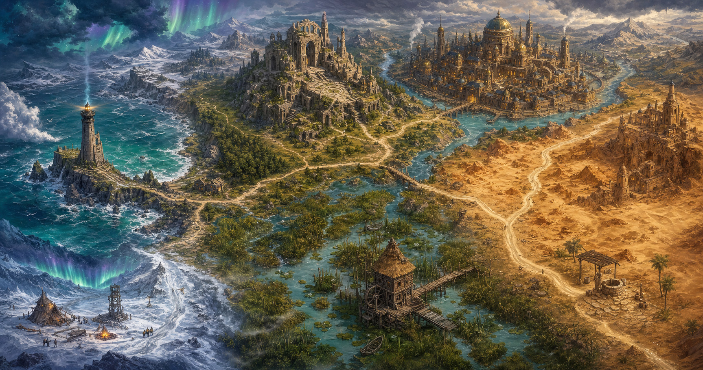

A complete, free one-shot start
Run tonight.
Continue next week.
Open Gullwatch Beacon with ten-minute prep, four playable scenes, maps, tokens, handouts, and a GM run sheet. When the table decides how it ends, keep that consequence ready for the next session.
No account. No install. No background analytics.

Need a different adventure?
Choose from 12 one-shot ideas across six original regions.
Start with a premise you can explain in one breath, then open its exact seed and settings in One-Shot Forge. Each route produces a five-scene session, fail-forward clues, a pressure clock, scaled opposition, and a linked party.
Choose an adventureOriginal. System-neutral. Free in your browser.
One clear path
From first read to the next decision
-
01
Open the kit
Read the compact GM material, place the supplied maps and tokens, and start from a playable situation.
-
02
Run four scenes
Use system-neutral pressure, clues, characters, and handouts without adopting another publisher's rules or setting.
-
03
Keep what changed
Record the ending, unresolved promise, and next player intention so the campaign grows from play instead of restarting.
After the one-shot
Close the session without losing the campaign.
Campaign Workspace turns the result at the table into a portable local save and a focused next-session brief. Your campaign data stays in the active browser unless you choose to export it. Gullwatch Harbor provides the complete four-session campaign when you want the coast's next three conflicts prepared for you.
Open Campaign Workspace Preview the four-session campaignBuilding games instead?